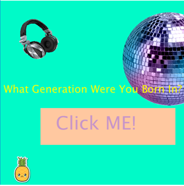

Personality Quiz
The personality quiz was one of the coding projects I did in the computer science class. It was difficult at first because we had to put all of the coding components we learned into one project. However, I did not work on this alone because I had a partner, Josselin Pena, to work on it with me.
